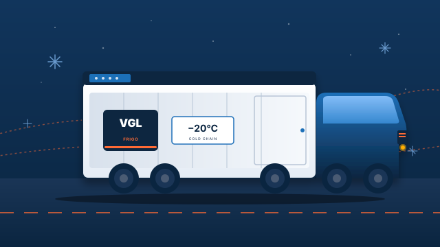

Carga completa frigorífica
Servicio FTL puerta a puerta en toda Europa con semirremolques mono y bi-temperatura.
Más informaciónVidal Gurghian Logistics S.L. mueve cada semana mercancías perecederas a más de 20 destinos europeos. Especialistas en los sectores cárnico, hortofrutícola, lácteo y alimentación, con flota propia equipada con GPS y control termográfico remoto.

Volumen, especialización y compromiso con cada carga. Números que respaldan la promesa de servicio de Vidal Gurghian Logistics.
Desde la carga completa internacional hasta el grupaje refrigerado, VGL diseña la operativa que mejor se adapta a tu producto y a tus tiempos.
Servicio FTL puerta a puerta en toda Europa con semirremolques mono y bi-temperatura.
Más informaciónConsolidación de cargas LTL para envíos parciales con la misma garantía de cadena de frío.
Más informaciónMonitorización termográfica en tiempo real, alertas automáticas y registro auditable por carga.
Más informaciónConexiones regulares con Rumanía, Hungría, República Checa y resto del Este europeo.
Ver mapaGestión integral de CMR, T1, ADR alimentario y documentación sanitaria europea.
Más informaciónVolumen, recursos y respaldo para transportistas autónomos que quieran crecer con nosotros.
Más informaciónConocemos los requisitos de temperatura, manipulación y trazabilidad de cada sector que atendemos.

Vacuno, porcino, ovino y aves. De +1 °C a −25 °C según el producto.
Ver sector
Producto fresco del arco mediterráneo a los grandes mercados europeos.
Ver sector
Cadena de frío continua y trazable entre centrales y distribución.
Ver sector
Producto terminado, refrigerado o ultracongelado, listo para distribución.
Ver sectorVGL opera rutas regulares en toda la Unión Europea, con especial fuerza en los corredores hacia el Este. Nuestra ubicación estratégica en Lleida —a 8 minutos de la A-2 y la AP-2— nos permite servir a clientes de toda la Península con tiempos competitivos.
Nos cuentas origen, destino, tipo de mercancía, temperatura y fechas.
Recibes una propuesta clara en menos de 24 horas laborables.
Asignamos vehículo y conductor, revisamos documentación y rutas.
Seguimiento GPS y termográfico durante todo el trayecto.
POD digital y reporte final con registro completo de temperatura.
Llevamos años exportando fruta a Centro Europa con VGL. La trazabilidad en tiempo real y la fiabilidad en frontera nos dan tranquilidad en cada campaña.
El control termográfico continuo y los reportes por carga marcan la diferencia. En carne fresca no podemos permitirnos sorpresas, y nunca las hemos tenido.
Pocas operadoras manejan los corredores del Este como ellos. Para nuestros tráficos a Rumanía y Hungría son nuestro proveedor de cabecera.